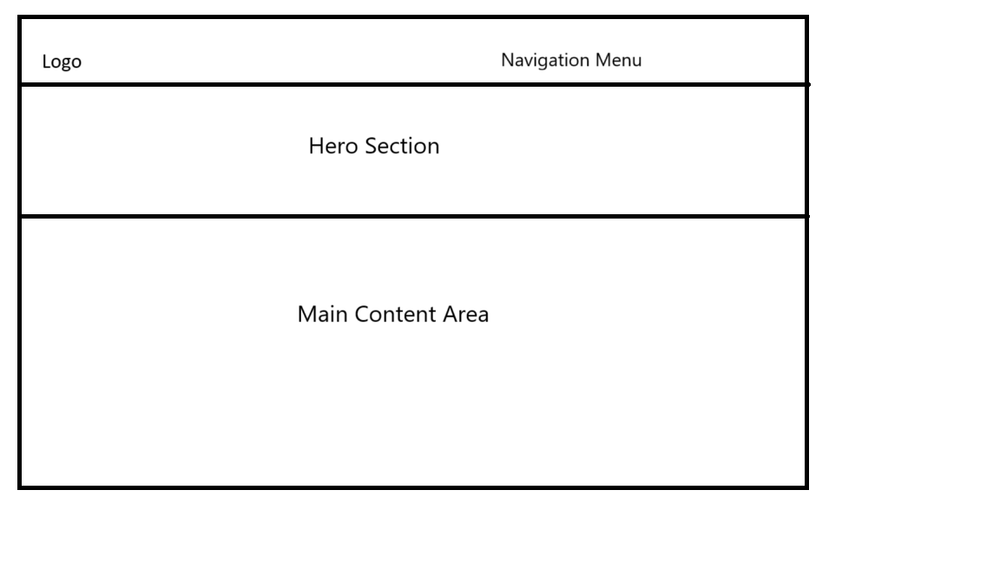

Discover Jinja
Site Name: Discover Jinja
This name highlights the idea of uncovering the hidden gems and cultural richness of Jinja and sorrounding.
Optional domain availability: jinjadiscovery.ug
Site Purpose
The site serves as a comprehensive guide to Jinja, showcasing its rich attractions, vibrant cultural experiences, and essential information for both tourists and locals. It aims to provide detailed insights into popular destinations, activities, and events, while also offering practical resources such as accommodation options, transportation tips, and local dining recommendations. By fostering a deeper understanding of Jinja's heritage and lifestyle, the site seeks to enhance visitors' experiences and encourage community engagement.
Scenarios
- What are the top attractions to visit in Jinja, and what activities should I prioritize during my trip?
- What cultural events, festivals, or hidden gems can I discover in Jinja to better understand my city's heritage?
- What family-friendly activities and accommodations are available in Jinja for a weekend getaway with kids?
Color Schema
Color 1: #2980b9 (used for headings)
Color 2: #ecf0f1 (used for background)
Typography
Font 1: Roboto, used for all text
Wireframe
Below is a simple wireframe representation of the home page layout for desktop views:
Desktop View
